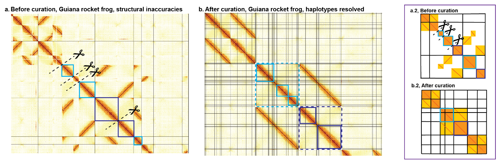
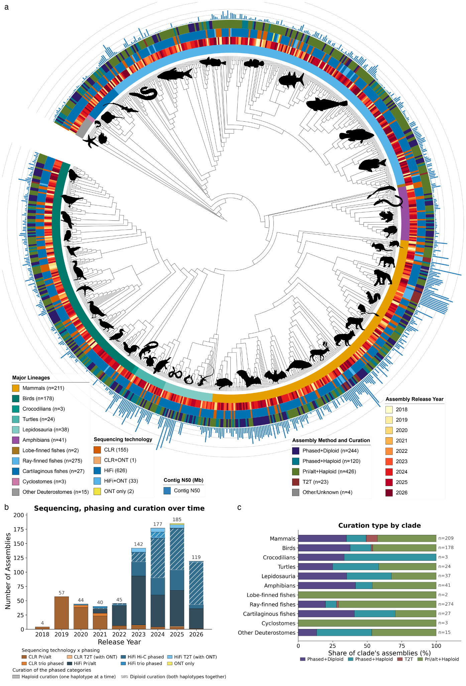
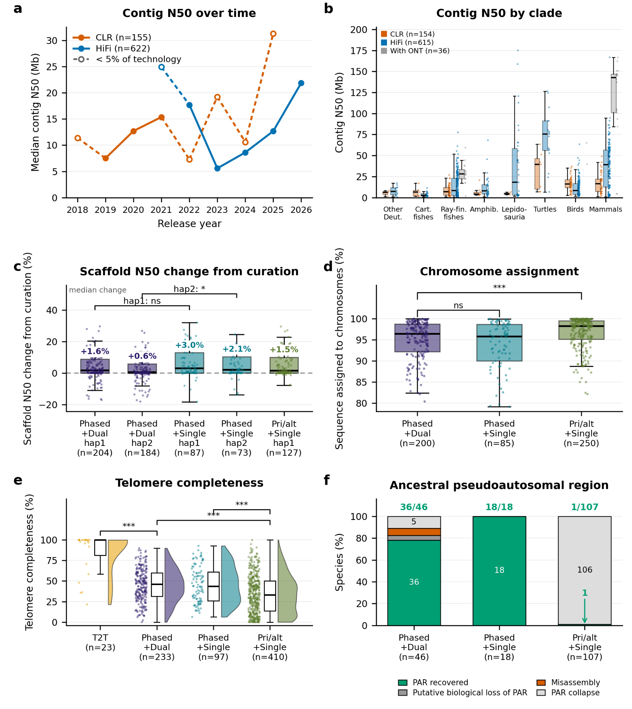
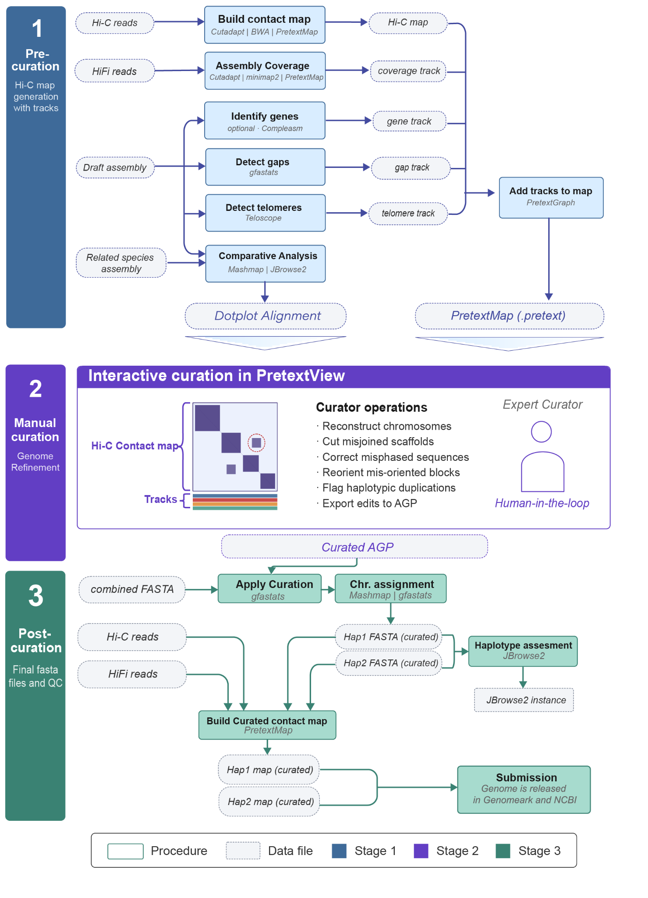
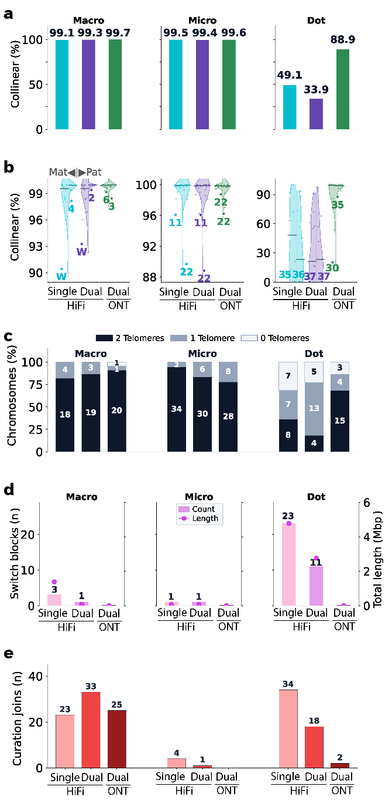
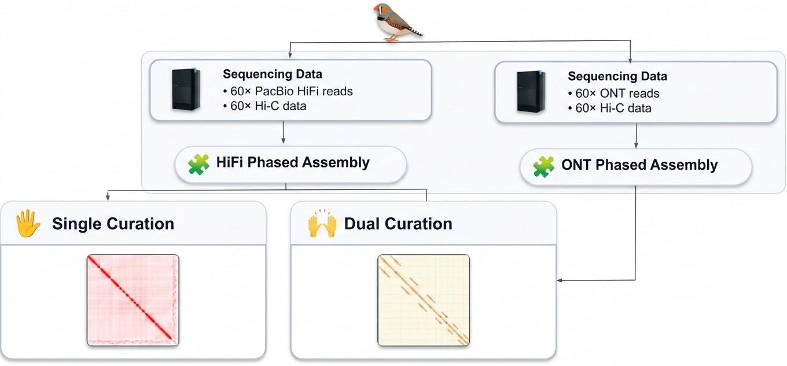
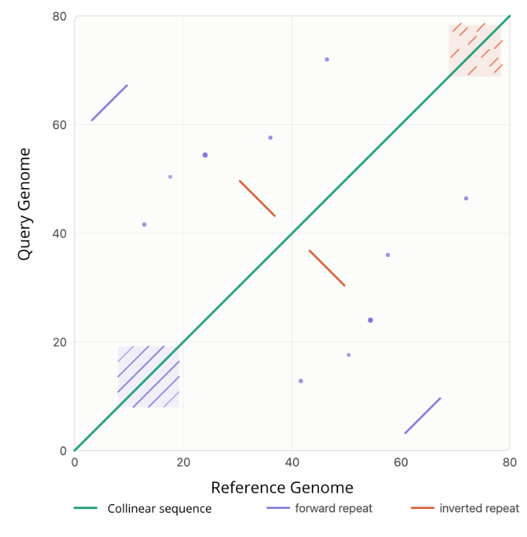
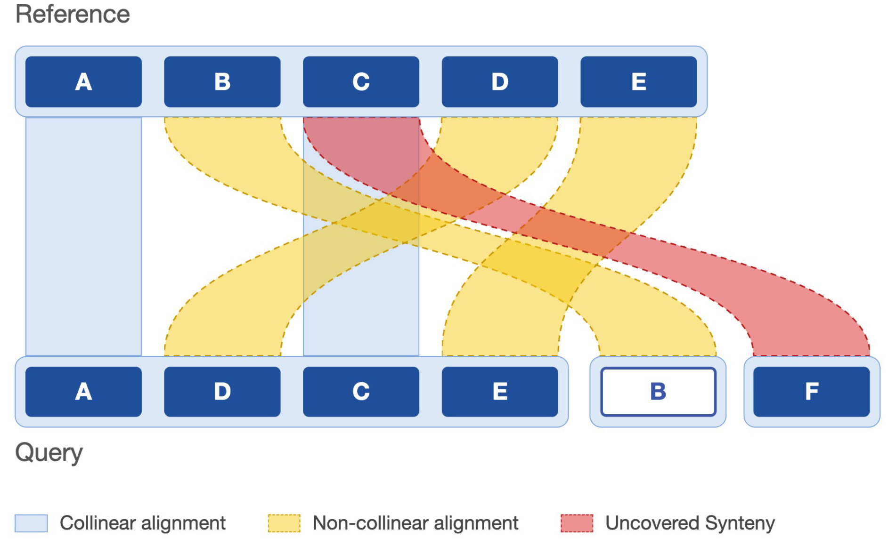
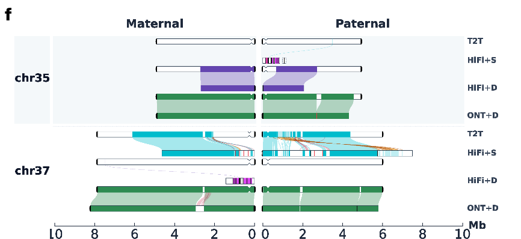

1Scaling diploid reference genomes in Galaxy
The Vertebrate Genomes Project (VGP) builds chromosome-level diploid reference genomes, targeting one near-error-free reference per vertebrate order in Phase 1. Producing these references across a distributed community requires accessible, reproducible methods that preserve contiguity, base accuracy, and phasing. Even with modern long-read assemblers, structural errors persist and manual curation remains essential.
The open VGP workflow suite in Galaxy runs on shared public infrastructure and improves completeness from two directions. Assembly updates refine haplotype phasing, Hi-C duplicate handling, gene-completeness scoring, contamination screening, and standardized quality-control reporting. Simultaneous dual curation builds joint Hi-C contact maps across both haplotypes, revealing shared structural signals that resolve misassemblies and phasing switches ambiguous in isolation.
Dual curation raises median chromosome assignment from 95% to 97%, delivering two phased haplotypes at the completeness of a conventional single-haplotype reference. Version-controlled workflows tested by the Intergalactic Workflow Commission (IWC) attach a FAIR provenance record to every genome.
4Diploid Hi-C curation in Allobates femoralis

Figure 3 | Diploid curation resolves both haplotypes in the Guiana rocket frog (Allobates femoralis). (a, a.2) Pre-curation Hi-C map. Gray grid lines mark initial scaffold boundaries, scissors mark Hi-C-supported break sites, and light and dark blue boxes trace fragments of two homologous chromosome pairs split across scaffolds. (b, b.2) Post-curation map. Dark grid lines mark applied breaks, yielding three resolved chromosome pairs (dashed boxes).
2VGP Phase 1 phylogeny & curation

Figure 1 | Phylogenetic and temporal distribution across 817 curated vertebrate genomes. (a) Open Tree of Life topology. Concentric rings (inner to outer): major lineage, release year (2018–2026), sequencing platform, assembly and curation mode, and contig N50 (median 13.0 Mb, range 0.2–174.9 Mb). (b) Annual assemblies by platform and curation category. (c) Curation category proportions per clade.
3Assembly quality across curation strategies

Figure 2 | Assembly quality across curation strategies. (a) Median contig N50 per release year by sequencing platform. (b) Contig N50 across major lineages and platforms. (c) Scaffold N50 percent change from curation across 585 curated haplotypes. (d) Assembled sequence assigned to chromosomes (%). (e) Terminal telomeres recovered (% of twice chromosome count). (f) Ancestral pseudoautosomal region (PAR) status across 171 mammal and bird species with a sequenced heterogametic sex.
5Pre- & post-curation workflows

Figure 4 | Automated Galaxy workflows flanking interactive curation. Three-stage pipeline on iwc.galaxyproject.org: (1) pre-curation Hi-C map and track build, (2) manual refinement in PretextView, and (3) automated AGP application, JBrowse2 QC, and GenomeArk/NCBI release.
6Single vs. dual curation and HiFi vs. ONT in zebra finch (Taeniopygia guttata)


Dual curation maximizes macrochromosome recovery (99.3% HiFi, 99.7% ONT) and captures the sex-chromosome PAR (chrW). Single curation recovers slightly more telomere-proximal microchromosome sequence (99.5% vs. 99.4%). Dot chromosomes remain fragmented in HiFi (49.1% single, 33.9% dual) and jump to 88.9% in ONT dual curation.
Consistent with collinearity, dual curation recovers both telomeres on more macrochromosomes (19 HiFi, 20 ONT vs. 18 single), whereas single curation leads in microchromosomes (34 vs. 30). ONT dual recovers both telomeres on 15 of 22 dot chromosomes.
Dual curation resolves more than half of HiFi switch blocks (23 to 11 in dot chromosomes and 3 to 1 in macrochromosomes). ONT dual assemblies contain near-zero switch blocks.
Single curation introduces more manual joins in dot chromosomes (34 vs. 18 HiFi dual, 2 ONT dual), matching its higher HiFi dot-chromosome collinearity.



Figure 5f | ONT recovers dot chromosomes. Manual joining of two scaffolds reconstructs paternal chr35 as a chromosome-scale scaffold at 87% collinearity, far outperforming HiFi. ONT dual curation recovers 98% of maternal and 96% of paternal chr37.